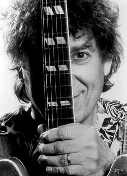

Если вы заглянете в словарь, рядом со словом "веселье" вы увидите его портрет.
Дж.Торогуд
Большинство ребят, кто берется за слайд, в конце концов начинают звучать, как Элмор Джеймс. Это потому, что используется определенный строй. Но для меня главным гуру по слайду всегда был Эрл Хукер, потому что он не перенастраивал свою гитару. Так можно в песне играть слайдом в любой момент, когда захочешь, без того, чтобы обязательно менять гитару.
Э. Бишоп

Элвин Бишоп начинал играть блюз во времена, когда вопрос "может ли белый парень сыграть блюз?" вызывал дискуссии, заканчивавшиеся дракой. Вопрос чудной, поскольку белые парни играли блюз по крайней мере от начала эпохи звукозаписи (о чем свидетельствует хотя бы альбом "White Boy Blues" в серии "Roots'n'blues', представляющий аудиосвидетельства, начиная со второй половины 20-х годов). Однако применительно к Элвину Бишопу этот вопрос ставить правомерно, надо лишь слегка заострить: может ли сыграть блюз белый парень с внешностью французского киноактера?Бишоп в блюзе - большой юморист, артист разговорного жанра. Ладно бы концерты, но и альбомы он заполняет житейскими анекдотами о том, к примеру, что именно означает выражение "в моем стойле брыкается другой мул" или "с чего начинается рыбалка", рассказанными речитативом поверх ленивого шаффла. "Она то и дело вставала и уходила, а когда возвращалась, в ней оказывалось место для следующей бутылки пива", - эта история приобретает в изложении Бишопа зловеще-безысходный антураж, рассказанная под аккомпанемент "шпионской музыки". Вообще-то, сочинил ее Мемфис Слим, но Бишоп вернул ее действие в новые времена репликой "тормози, бармен, я кредитку дома забыл". А там, где слов не хватает, - о горе человека, зашедшего в бар с пятьюдесятью долларами, а вышедшего с двумя центами, - поет гитара слайдом. В собственной жизни Бишоп находит предостаточно сюжетов для скетчей:
"Когда жарит солнце, мой пес валяется в тени. Работать ему не нужно совсем, на это у него есть лучший друг - человек. Зато если я напьюсь вдребадан, мой пес покажет мне дорогу домой, вот такой у меня пес, старый добрый пес. Хотите послушать, как он воет? _________ А вот, как мой пес гавкает... _________"
Там, где прочерк, в концерте звучит слайд-гитара. И она, действительно, и воет, и гавкает; и это лишь броские трюки, лишь то, что сразу заметно. За ними лежит глубокое и любовное знание инструмента и опыт четвертого десятилетия игры. Не случайно же этот хохмач пользовался уважением первопроходцев рок-слайда: Майка Блумфилда и Дюана Оллмана. Да, Элвин Бишоп начинал во времена, когда на рок-музыкантов смотрели не как на простых парней, сумевших сразу после школы сколотить миллион. На рок-гитаристов в 60-х смотрели как на первопроходцев, провозвестников и бунтарей. И Элвин был тогда в самой гуще событий.
Сейчас ему 56, и в песне "Снижаю скорость" он поет, что хочет продолжать отмечать дни рождения. Принимая интервьюера в собственном доме (что к северу от Сан-Франциско), он говорит: "Я воспользовался всем, чем можно, от своей молодости. И не могу особо осуждать тех, кто в этом плане куролесит сейчас, будь то выпивка или девочки, потому что я и сам жил так же". Ему 56, но женат он всего 13 лет, его младшей дочери 10, а старшей 20...
Бишопу еще не было и восемнадцати, когда он оказался в Чикаго - в 1960-м году, как раз накануне событий, выковавших из черного чикагского блюза всемирную рок-музыку. Рос он в штате Оклахома и с пяти лет доил коров. Всю черную фермерскую работу он изведал на собственной шкуре. Сегрегация была нормой жизни. "Всякая попытка общения строго осуждалась. У нас были фонтанчики для питья отдельно для белых, отдельно для черных; закусочные для черных, закусочные для цветных. И в поезд черные садились в хвост вагона. Об этом я вспоминал в песне "Этот поезд ушел", - рассказывает Бишоп. К его чести нужно заметить, что несмотря на полную невозможность общения с афроамериканцами, он умудрился подхватить вирус блюза, просто слушая средневолновые радиостанции, передававшие музыку для цветных. Радиоприемник был размером с холодильник, о чем вспоминает Бишоп в песне "Радио-буги" из последнего альбома.
(Блюз - авторская и автобиографическая музыка. Часто находя сюжеты песен в собственной жизни, Бишоп еще раз демонстрирует, насколько подлинно он блюзмен в душе. В "Радио-буги" вместе со своими ровесниками Чарли Масселуайтом и Джо Луисом Уокером он вспоминает аббревиатуры названий тех станций, что принесли им блюз в молодости и отрочестве, - и произносит их корявые созвучия с любовной ироничностью.)
Радио было окном в мир из пыльной Оклахомы. И Бишоп учился в школе на отлично. "Колледж был моим билетом из Тулсы", - говорит он, подразумевая, что единственным способом вырваться было уехать учиться. В семье денег на учебу не было. Элвин старался в школе и был вознагражден Национальной стипендией. Он поехал в Чикаго учиться на физика, и Национальная стипендия оказалась путевкой в блюз. На второй день в Чикаго Бишоп увидел молодого человека, игравшего блюз на гитаре. Он сидел на ступеньках, рядом стояло пиво.
"В те времена белых, кто интересовался блюзом, я мог сосчитать на пальцах, так что это было нечто, - вспоминает Бишоп. - Я остановился и заговорил с ним. Оказалось, он увлекается и губной гармоникой. И мы сразу сдружились". Молодого человека звали Пол Баттерфилд.
Чикагский блюз был в силе. В городе работало более двух сотен блюзовых клубов, и в любой вечер можно было услышать Мадди Уотерса, Литл Уолтера, Хаулин Вулфа, находившихся в расцвете сил. И восходящих - Мэджика Сэма, Отиса Раша, Бадди Гая... Другое дело, что белые лица в таких клубах встречались не часто, и хорошая компания для походов туда не помешала бы юным студентам... Кстати, и с Масселуайтом, с годами ставшим корифеем блюзовой губной гармоники, они подружились именно в таких блюз-походах.
"Однажды я зашел в ломбард на Кларк-стрит посмотреть что-нибудь для гитары. Я начал наигрывать, и парень, работавший там, спросил меня, нравится ли мне блюз. Я сказал "конечно", он взял гитару и сыграл нечто поразительное. У меня просто крышу снесло", - так Элвин Бишоп вспоминает знакомство с Майком Блумфилдом, будущим первым белым гением слайд-гитары. Втроем и парами они ходили по чикагским кабакам, пропитываясь блюзом классиков и совершая первые выходы на сцену. С враждебным отношением публики сталкиваться им приходилось, но блюзмены, убедившись в правдивости их стремлений, взяли их под свое крыло. Баттерфилд начал играть в бэнде у легендарного Хаулин Вулфа, а Бишоп - у не менее легендарного, пусть и менее известного чикагского бугимена Хаунд Дога Тейлора.
В альбоме памяти Хаунд Дога Тейлора (фирмы "Эллигейтор") Бишоп рассказывает: "Это был 1962 год. Мне еще не исполнилось 20, и я совсем недавно приехал в большой город Чикаго из Тулсы, штат Оклахома. И я познакомился и получил работу у Хаунд Дога Тейлора. Это был тот еще парень. Я ему понравился, потому что мог играть "Убежище" (этот новый инструментал техасца Фредди Кинга в те времена представлялся высшей школой гитарного искусства. - А.Е.). Тогда каждый чикагский блюз-бэнд должен был обладать гитаристом, который мог бы сыграть "Убежище". Он не очень много времени отдавал репетициям. Мы собирались в его доме время от времени, он выставлял куриные крылышки, и мы выпивали по стаканчику виски, а потом лабали пару песен. Но когда наступал концерт, он никогда не играл ни одну из этих песен. Он просто задавал ритм. Он говорил что-нибудь вроде: "Эй, дадим фанка!"
(Любителей собственно "фанка" просьба не беспокоиться. Это выражение в блюзовых кругах спокон века означает ни к чему не обязывающий веселящий разбитной ритм.)
"Хаунд Дог был тот еще парень, - продолжает настаивать Бишоп в интервью "Блюз ревю" прошлого года. - Он играл в самых дешевых заведениях Чикаго, куда ходили только пропойцы, проститутки и те, кто сидел на самых дешевых пособиях. Он был из тех, кому как раз это нравилось. Там напряжение всегда было на высшей ноте".
Спасибо Бишопу, он определил источник, питающий жесткую, через край бьющую энергетику неотразимо-примитивного буги-блюза шестипалого гитариста. Хаунд Дог Тейлор остался кумиром для Бишопа, как и ряд других знаменитых или забытых ныне музыкантов, кого он видел и слышал на сценах чикагских подвальчиков: Отис Раш, Литл Смоки Смозерз и Лютер Эллисон. Но наступало время юнцам самостоятельно выходить в чикагский блюзовый свет.
Баттерфилд в блюз-бэнде Хаулин Вулфа познакомился с барабанщиком Сэмом Лэем и басистом Джеромом Арнольдом. Когда он заполучил постоянную работу в клубе "У Большого Джона", он заманил к себе эту ритм-секцию Хаулин Вулфа большим заработком. Бишоп, Блумфилд и Баттерфилд и раньше играли вместе. Но с этого момента официально возникает "Пол Баттерфилдз блюз-бэнд" - первый, где играли вместе черные и белые, и первый, где блюз в полной мере становился роком.
"У Большого Джона" мы играли шесть ночей в неделю, - вспоминает Бишоп. - А в Чикаго клубы открыты до 4 утра по будням и до 5 - в субботу. Мы играли по шесть отделений каждый вечер и семь - в субботу. Для молодого музыканта - это хорошая школа".
Но тяжкий детский труд на ферме Бишоп не вспоминал. Это было другое дело!
"Мне просто повезло, что я был там, потому что Блумфилд и Баттерфилд были все время полны огня. Сэмми и Джером обладали настоящим опытом... Многие музыканты, играющие по клубам, постепенно проникаются мыслями, что просто нужно отыграть ночь. Такого никогда не было в группе Баттерфилда".
Группу ждал большой успех. В 1965 г. "Пол Баттерфилдз блюз-бэнд" с блеском и триумфальным скандалом выступил на блюзовом фестивале в Ньюпорте и записал дебютный альбом, легший краеугольным камнем в построение блюз-рока. Баттерфилд и Блумфилд были признаны виртуозами своих инструментов и буревестниками новых музыкальных идей, а соратник Бишоп вдруг оказался в тени их успеха. Блумфилд покинул группу после записи второго альбома (кстати, в этом альбоме Бишоп впервые представлен и как вокалист: он поет в песне "Никогда не говори "нет"). Третий альбом был посвящен восхождению Бишопа на должность лидер-гитариста, поскольку назывался "Возрождение Пигбоя Крэбшоу", что было прозвищем хохмача Бишопа в кругу друзей, по-русски нечто вроде "Свинопас-бузотер".
Однако потенциал "Пол Баттерфилдз блюз-бэнд" к началу 70-х был уже исчерпан. Возможно, как раз потому, что музыканты стремились "жить быстро". Сам Пол решил попробовать начать заново с большим составом, он собирал группу "Лучшие дни" с участием духовой секции... И уходил от блюзового формата.
"Лучше всего это звучало, когда Баттерфилд исполнял 12-тактовый блюз. Но в какой-то момент нас захлестнула демократия, в результате группа расплылась и потеряла лицо. Я хотел большего права голоса. Единственное, что можно было сделать, это самому стать хозяином ситуации".
Вся троица перебралась из Чикаго в благословенную Калифорнию, но музыкальные пути их разошлись навсегда. (И давно уже из этих трех жив только Бишоп.) В Калифорнии гитаристам жилось особенно "быстро". Бишоп сдружился с еще одним магом блюз-роковой слайд-гитары - Дюаном Оллманом. В альбоме "Оллман бразерз" "Филмор Ист" опубликована запись, где эта популярнейшая на тот момент группа фактически аккомпанирует Бишопу, исполняющему свою песню "Парень с пьяным сердцем". (И Дюана Оллмана давным-давно уже нет с нами.)
70-е годы побаловали Бишопа популярностью. С вокалистом Миккей Томасом он записал свою песню "Дурачился и влюбился", которая поднялась до третьей позиции в поп-хитах. Бишоп записывал жирный слезоточивый слайд и дурачился на концертах, выступал в комбинезоне, представляя тип неунывающего нерадивого, но безобидного работничка. Его песни-юморески, в которых мало что осталось от блюза, веселили публику. Он замелькал на телешоу, и верхом карьеры стало приглашение в шоу Дэвида Литтермана (передачу, посвященную пустословию знаменитостей). Однако во второй половине 70-х фирма "Каприкон", которая занималась пластинками Бишопа, обанкротилась. Удача упорхнула из рук. За последующие двенадцать лет Бишоп записал только два альбома, по одному в Старом и Новом Свете...
Блюзовая судьба свершает стройные спирали.... Бишоп почувствовал себя профессионалом, играя в блюз-бэнде Хаунд Дога Тейлора... История чикагской фирмы "Эллигейтор" начинается с записи альбома Хаунд Дога Тейлора... Возвращение Бишопа на блюзовые круги произошло именно благодаря фирме "Эллигейтор"...
Альбом 1988 года назывался "Большое веселье". Бишоп продолжал придерживаться выстраданного им принципа клубного успеха: "Если публике не будет весело - в следующий раз она не придет". Основатель чикагского "аллигатора" Брюс Иглауэр считал, что большое количество кавер-версий блюзовой классики на новом альбоме только снижает интерес публики. Проверьте - нет другой блюзовой фирмы, выпустившей так мало новых версий бессмертного, но бесконечного "Хучи-кучи". Обсуждая план второго "аллигаторовского" альбома, Иглауэр осерчал, узнав, что Бишоп собирается записать слишком много кавер-версий.
"Я не помню, какие именно, - говорит Иглауэр, - но это были песни, которые, по моему мнению, записывали уж слишком часто. И я сказал ему, что если он их запишет, то пусть уж заодно запишет и "Боже, благослови Америку".
"Это меня разозлило, - вспоминает Бишоп, - и мы просто взяли тот самый трек, изъяли вокал, сочинили новый текст и наложили его прямо на старую запись".
Результатом Иглауэр оказался весьма доволен, хотя называлась старая песня на новый лад: "Не позволяй начальнику садиться тебе на шею". Именно она и дала название всему альбому.
С точки зрения любителя собственно блюза, эти два первых альбома Бишопа на "Эллигейтор" были не особенно интересны. Гитарные брейки были короткими и малозапоминающимися. Инструментальные номера были длиннее, но запоминались так же плохо. Казалось, в арсенале гитариста осталось несколько старых проверенных трюков, в исполнении которых он чувствует себя уверенно и применяет их экономно...
Лишь третий альбом "Ace In The Hole" (что, пардон, означает "Вожжа под хвост", или "Шило в зад") удостоверил, что мы все еще имеем дело с гитаристом высшей квалификации. Но на весь альбом блюзовости Бишопу не хватило. К концу он скатился к невнятной в стилевом отношении и малоинтересной по содержанию "музычке". Напоминая о былых поп-заслугах, он записал инструментальный вариант своего единственного хита так, словно ему нужна была демо-запись для получения работы на коктейлях и презентациях.
Впрочем, любой из этих трех альбомов представлял и славные в блюзовом отношении песни. А главное, концертный альбом, посвященный 20-летию фирмы, продемонстрировал, что Элвин Бишоп - не только разговорник, но и гитарист!
Прошлогодний альбом Бишопа оказался и самым блюзовым, и самым серьезным среди его сольных работ за всю долгую карьеру. В нем, разумеется, есть место и для шуток. Но, словно темы обязывают, многое отдано и серьезной гитарной игре. В заглавной "Своей рубашке" поется о том, как трудно людям понять друг друга, как многие оказываются пленниками "своих колоколен", как не могут отстраниться от "своей рубашки" и в результате: "белые не могут понять черных, черные не доверяют белым; старики не любят молодое поколение, молодежь не слышит стариков". Аранжировка нашпигована вроде бы типичными бишоповскими "комическими" саксофонными риффами, но напряжение слайдовой игры не дает "похихикать и забыть". В этой шутке - слишком большая доля правды, и правды горькой. Бишоп обладает столь необходимым для блюза уникальным, авторским звучанием игры и эмоциональной выразительной инструментальной импровизацией.
"Я всегда старался включать так много слайдовой игры, как только можно, - говорит он. - Она компенсирует недостатки голоса, которого у меня, по большому счету, никогда и не было. Слайдом вы можете петь так, как хочется, и не вспоминать об ограничениях вокального диапазона".
Тема средних лет проходит через альбом красной нитью. Зарубила она 56-летнего Бишопа поздновато, но крепко: "Снижаю скорость", "Длинные Тени", "Мужчина среднего возраста"... Венчает альбом печальная песня Мерси Дии Уолтон о тенистой аллее, которая начинается со строк о "прощальном звоне колоколов" и заканчивается словами: "Я не хочу ничего быть должным миру, когда лягу в тенистой аллее" - ничего подобного на прежних альбомах Бишопа и вообразить невозможно! Какая тонкая здесь кроется связь - не расшифровать. Не слишком радостные мысли каким-то образом придали блюзу Бишопа уверенную и твердую походку классического чикагского стиля, а слайдовая игра обрела весомость и объем. Недаром много раз замечено, что возраст блюзмену - на пользу.
Андрей ЕВДОКИМОВ
Фото предоставлено "Alligator Records"
Перепечатано из журнала Jazz-квадрат